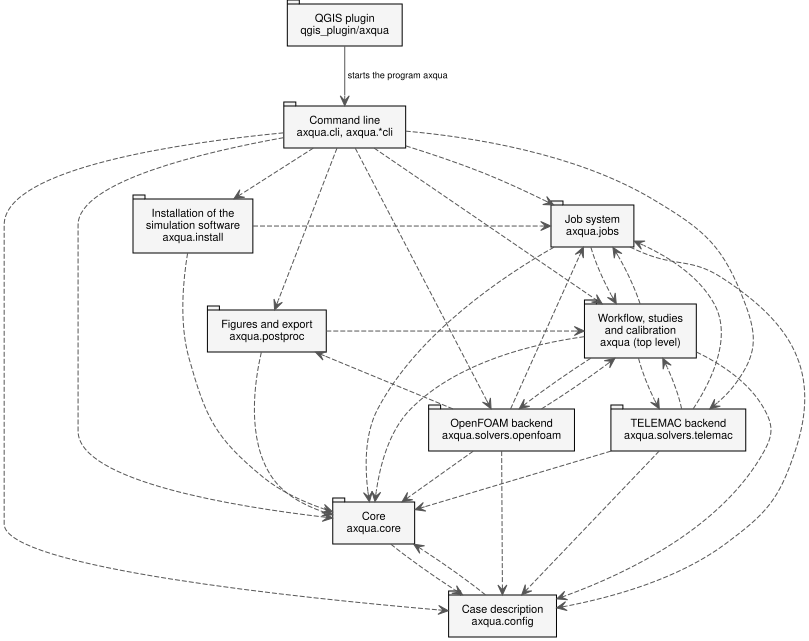

Structure générale et UML
aXqua se compose de trois parties qui peuvent être utilisées indépendamment l’une de l’autre : une bibliothèque qui construit et évalue des modèles, un système tâche qui exécute des simulations comme processus indépendants, et l’extension QGIS comme interface utilisateur.


Les paquets d’aXqua dans la notation du langage de modélisation unifié (UML). Une flèche pointée d’un paquet à un paquet qu’il utilise. L’extension est connectée par une flèche solide, car elle n’utilise pas la bibliothèque comme code de programme : elle démarre le programme axqua et lit les fichiers que le programme écrit.
Le diagramme montre les trois règles de conception qui sont indiquées ci-dessous : aucune flèche ne mène du noyau à un moteur, aucune ne relie les deux moteurs, et l’extension tronçons la bibliothèque à travers la ligne de commande seulement. Les diagrammes de cette section sont générés à partir du code source avec le script scripts/build_uml.py et montrent donc le code tel qu’il est.
Les diagrammes de classe des structures centrales de données font partie des pages qui les documentent :
la description du cas, avec une classe par bloc d’un fichier de cas (Classes de la description du cas (axqua.config). La classe Config contient une classe par bloc d’un fichier de cas, et certains blocs contiennent d’autres classes, par exemple une classe par paramètre de calage.) ;
le profil de l’ordinateur et les messages des vérifications (Classes qui décrivent l’ordinateur et les messages d’aXqua. Le profil (AxquaProfile) contient une liaison par code de simulation. Les cinq types d’erreur sont dérivés d’un type d’erreur générale.) ;
les codes de simulation derrière une interface et leurs capacités (Les codes de simulation derrière une interface. Les deux moteurs sont dérivés de BaseBackend, qui remplit l’interface SolverBackend. BackendSpec décrit un moteur et ses capacités sans le charger.) ;
a tâche, de sa soumission à son résultat (Cours de tâche. JobSpec est la description qui est soumise, avec une classe d’options par type de tâche. JobStatus est l’état que rapporte la tâche en cours, avec une classe de progrès par type de tâche. Les quatre lanceurs remplissent l’interface JobLauncher et détachent une tâche sous Linux, sous Windows et dans le sous-système Windows pour Linux.).
Les diagrammes de classe utilisent trois types de connexions. Une flèche avec un triangle creux pointe d’une classe spécialisée à la classe générale dont elle est dérivée. Une ligne avec un diamant rempli relie une classe avec ses composants, avec le diamant dans la classe qui les contient. Une flèche en tirets avec un triangle creux pointant d’une classe à une interface que la classe remplit. L’étiquette au-dessus d’un nom de classe, par exemple «dataclass» ou «enumeration», indique le type de classe.
Règles de conception
Trois règles déterminent la structure. Chacun d’eux est mis en œuvre par un test automatisé qui lit le code source.
Le noyau ne dépend pas d’un code de simulation.
axqua.coredécrit le plan d’eau surface libre et la tâche de modélisation. Les moteurs dansaxqua.solversdépendent du cœur, jamais de l’inverse. Un nouveau code de simulation peut donc être ajouté sans changer le noyau.Les moteurs ne dépendent pas les uns des autres. Le moteur TELEMAC et le moteur OpenFOAM ne s’importent pas. Les étapes qui impliquent les deux codes, comme l’échauffement TELEMAC d’un modèle OpenFOAM, sont coordonnées à un niveau supérieur (
axqua.prerun,axqua.workflow).L’extension n’importe pas la bibliothèque. QGIS possède sa propre installation Python, alors que la bibliothèque nécessite plusieurs paquets géospatials et l’environnement d’un code de simulation. L’extension appelle donc le programme
axquacomme un processus séparé et n’échange que de petites informations avec lui : un ID tâche, un état, un chemin de fichier. Les données de résultat ne passent jamais par l’extension. QGIS ouvre les fichiers de résultat lui-même.
Une conséquence de la troisième règle est qu’une simulation ne dépend pas de l’ouverture de QGIS. L’extension soumet une tâche et affiche son état, mais la tâche appartient au système d’exploitation.
Emballages
Paquet |
Contenu |
|---|---|
|
La description du cas en tant que classes de données Python, avec lecture et rédaction du fichier de cas (Configuration). |
|
Geodata, rasters, frontières, structures, format de fichier SELAFIN, capacités, registre des moteurs, types d’erreurs et environnements des codes de simulation (Noyau agnostique du solveur). |
|
Maillage génération, conditions aux limites, fichiers de paramètres, cours et évaluation pour TELEMAC (TELEMAC moteur). |
|
Maillage génération, champs initiaux, dictionnaires, parcours et évaluation pour OpenFOAM (Moteur OpenFOAM). |
|
Étapes indépendantes du code de simulation ou comportant les deux codes : traitement du terrain, mesures, études et calage (Flux de travail, études et calage). |
|
Identité, stockage, exécution et détachage des tâches (Système tâche). |
|
Chiffres tirés des résultats (Post-traitement). |
|
L’extension QGIS (Extension de QGIS). |
Les moteurs sont enregistrés par le groupe de points d’entrée axqua.solvers du paquet Python. Un code de simulation supplémentaire peut être fourni comme un paquet Python séparé qui s’enregistre dans ce groupe.
Capacités
Chaque moteur déclare les types de simulation qu’il prend en charge, par exemple une simulation 2D stable ou une étude de convergence en maillage. Pour un cas donné, aXqua rapporte chaque capacité à trois niveaux indépendants :
implemented: le moteur prend en charge la capacité (yes,no, oun/alorsque la capacité n’existe pas pour le code) ;configured: le fichier de cas le demande ;builtetrun: les fichiers d’entrée et les fichiers de résultat existent.
La commande axqua case-status <case-file> --json retourne cette information. L’extension l’utilise pour décider quelles fonctions elle offre pour un cas.
Licences
La bibliothèque est distribuée sous licence BSD 3-Clause. L’extension QGIS est distribuée sous la licence publique générale GNU, version 2 ou ultérieure, car elle utilise l’interface de programmation de QGIS.